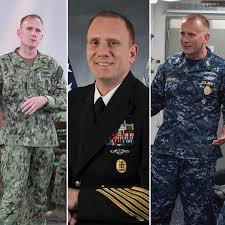

Master Chief Petty Officer Steven S. Giordano
Biography
Training
Born in Baltimore, Maryland, Master Chief Petty Officer Steven S. Giordano enlisted in the Navy in June of 1989. He completed his basic training at Recruit Training Camp Orlando, Florida, and reported to the Naval Technical Training Center in Pensacola Florida, to complete training as a Cryptologic Technician.
Initial Assignments
After Master Chief Giordano graduated from technical school, he reported to Agana, Guam, serving as a Signals Analyst and Reporter for FAIRECONRON ONE (VQ-1). He completed an operational deployment to Naval Support Group Activity Bahrain, to support Operations Desert Storm and Desert Shield. Following this deployment, Master Chief Petty officer was moved to Naval Support Group Activity Pearl Harbor, in Hawaii, to complete several operational deployments with the Pacific Fleet.
Reassignments
After completing this assignment, Giordano was reassigned to the National Security Agency/Central Security Service’s Fort Meade, in his home state of Maryland, to work as a Maritime Analysis Cell Analyst. In October of 1999, he reported to Naval Support Group Activity Rota, Spain, to complete three operational deployments, and one serving aboard an allied combatant.
Further Training and Service
Returning to Pensacola, Florida, Master Chief Giordano reported to the Center of Naval Leadership for duties as the Entry Level ELINT school Course Manager and LCPO. After passing this piece of his training, he reported to the Navy Information Operations Command at Fort Gordon, Georgia, as the Fleet Cryptologic Augmentation Center Division Chief and Fleet Operations Department Leading Chief Petty Officer. Master Chief Giordano then graduated from the U.S. Navy Senior Enlisted Academy as a part of the Class of 133, reporting on staff as a faculty advisor in September of 2007.
Non-Commissioned Officer Service
Master Chief Petty Officer has since served on board the USS McClusky (FFG-41) and at Navy Information Operations Command Colorado. He served as the Force Master Chief for Navy Information Dominance Forces from December 2012 until February 2015. Prior to his appointment as Master Chief Petty Officer of the Navy, Giordano served as U.S. naval Forces Europe/U.S. Naval Forces Africa Fleet Master Chief.
Awards
Master Chief Giordano’s decorations include the Legion of Merit, Meritorious Service Medal, Joint Service Commendation medal, Navy and Marine Corps Commendation Medal (5 Counts), Navy and marine Corps Achievement Medal (7 Counts), and other unit and campaign awards. He is designated in Information Dominance Warfare, Submarine Warfare, and Surface Warfare. He holds a Bachelor of Science in Management and is a Keystone graduate from the National Defense University.
Timeline
| Date | Event |
|---|---|
| June, 1989 | Enlisted in the Navy. |
| October, 1939 | Reported to NSGA Rota, Spain, and was deployed. |
| September, 2007 | Graduated from the U.S. Navy Senior Enlisted Academy, and became part of the staff as a faculty advisor. |
| September 2, 2016 | Became the Master Chief Petty Officer of the Navy. |
For More Information...
For more information visit the following:
Official MCPON Website
Official MCPON Bio
US Naval Forces Europe-Africa 6th Fleet Bio
Note
I chose to write about Master Chief Giordano because as the new Master Chief Petty Officer of the Navy, there are many things about him that haven't been published by sources other than official military websites. In addition I am very intersted in the Navy and as he is a "new face" in the Navy Staff, it was an easy choice. I look forward to seeing what MCPON Giordano chooses to change about the Navy.